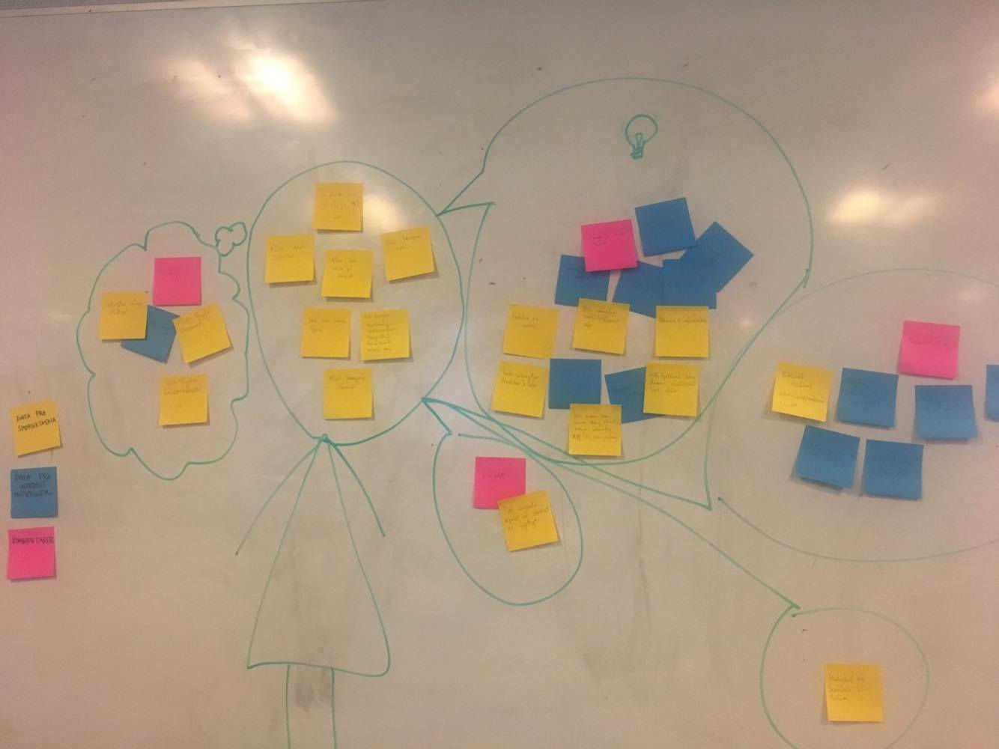

Interviewperson: Kvinde, 5. Semester, KEA studerende
Lokation: Kantine
Ved du hvor du finder information om: skema, semester information, eksamenshjælp? Ja, på fronter
Har du problemer med KEAs online struktur? Ja, jeg hader fronter
Hvad synes du om fronter? Jeg er ikke tilfreds med fronter, strukturen er dårlig og det er dermed ikke til at finde rundt. Generelt ville Jeg ønske at der eksisterede en bedre kommunikation på fronter.
Når du søger hjælp, hvor henvender du dig? Jeg søger oftest hjælp hos læreren, enten ved direkte henvendelse eller ved mail. Jeg har ikke benyttet mig at tutorer, men der mangler måske en måde at komme i kontakt med nogle der kan hjælpe.
Hvilke funktioner synes du at Fronter mangler? Direkte chatfuntkion mellem elev og lærer. Eventuelt en funktion, der gør det muligt at chatte med andre elever.
Hvilke funktioner på KEA, fungerer dårligt? Jeg er personligt træt af skemaet - mest af alt træt af, at vi skal scrolle hele vejen ned.
Hvordan kunne du ønske at KEA strukturerede deres informationer? Jeg synes at fronters mappestruktur er rodet og kompliceret. Der mangler samling på informationer, det hele er lidt spredt.
Vores Experience Map er lavet med udgangspunkt i ovenstående interview, resultaterne af spørgeskemaet som blev udformet af underviserne (se resultatet her), samt vores egne oplevelser som nye studerende på KEA. I første omgang skrev vi alt ned som vi fik ud af de tre forskellige kilder. gul er fra spørgeskemaet, blå er fra interviewet og pink er vores egne holdninger. Derefter arrangerede vi de forskellige post-its i forskellige temaer.

Dette var udgangspunktet for vores videre arbejde.

Dette experience map er inddelt efter hvad vi har lært om målgruppen, hvilke funktioner målgruppen efterspørger, eller ønsker var mere overskueligt, sidste gruppe handlede om kritik af design i forbindelse med eksisterende løsning.
Her har vi set på forskellige aspekter af problemerne, og inddelt efter hvad som foregår inde i hovedet på en person, hvad som er nye ideer, hvad som handler om følelser og andet.
Ud fra de indsamlede data om målgruppen, har vi sammensat nedenstående persona.
21 år
Opvokset i København.
Bor på Østerbro sammen med sin mor, stedfar og lillebror som er 17 år.
Hun har en kæreste som læser til flymekaniker. Caroline tog et sabbatår efter folkeskolen, hvor hun arbejde i Lagkagehuset og sparede sammen til en rejse med sin kæreste. De rejste til Asien og var afsted i 2,5 måned. Da de kom hjem var deres forhold meget tættere end da de tog afsted.
Hun blev færdig med studentereksamen i 2017 og er startet på KEA multimediedesigner uddannelse i august. Hun syntes det er spændende, men meget svært, da det er en helt anden måde at arbejde på end hun er vant til.
Caroline arbejder stadigvæk i Lagkagehuset i weekenderne.
Caroline arbejder med Mac og bruger en iPhone. Hendes mest brugte apps er facebook, messenger, snapchat og Mobilpay.
Caroline er nervøs for eksamen fordi hun ikke har prøvet en portfolio eksamen før.
Pain-point: Folk har problemer med at finde overblik over skemaer, information og viden.
Pain-point: Når jeg sidder fast i en opgave ved jeg ikke hvor jeg skal finde hjælp.
Pain-point: Det er irriterende at bruge gruppesheetet til at finde ud af, hvilken gruppe man er i, og det kan være svært at kommunikerer med sin gruppe. og det er upraktisk at kommunikere med sin gruppe via facebook.
Under de tre idéer, i afsnittet Ideate står vores bemærkninger til benchmarking.
Link til benchmarking oversigt
Vi har arbejdet med forskellige idéer,
en hånd som samler trådene, og forskellige simplificeringer af dette.
KEaid som “first aid” plastre, førstehjælpskasse, bandage.
KEAid idkort, identitet.
Mange forskellige informationer samlet ét sted.

I vores endelig design, har vi valgt at bruge app'ens logo. Da vores målgruppe er KEA studerende, og der er ikke noget som identificerer KEA bedre en navnet, derfor valgte vi at bruge tekst, da vi mener at det er det som KEA studerende vil lede efter. Vi har brugt hvid og rød tekst på grøn baggrund.
Vi har været igennem forskellige overvejelser omkring stilen på app'en. Samtidig med at vi gerne ville have at den er venlig og indbydende, er det også vigtigt for os at den fremstår professionel og frem for alt overskuelig.
Den gennemgående farve er den grønne farve, som KEA bruger til deres MMD studerende.
Baggrundsbilledet er et foto af KEA-bygningen på lygten 16, dette for at skabe en visuel sammenhæng med KEA.
Ikoner og tekst er hvide for at fremhæve dem, mod den grønne baggrund.
Notifikationer er røde, observationspunkter er gule. Rød og gul er valgt fordi de bliver tydeligt fremhævet mod den grønne baggrund.

 Sophie Engelbreth
Sophie Engelbreth
 Malik Eriksson
Malik Eriksson Laise Bang Henriksen
Laise Bang Henriksen Mikkel Lehrmann
Mikkel Lehrmann Hëdi Wedelberg Bjørnum
Hëdi Wedelberg Bjørnum